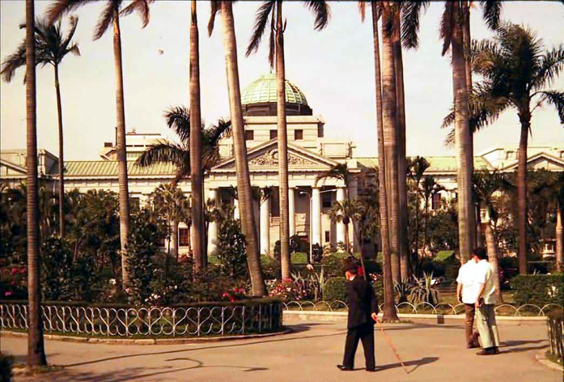
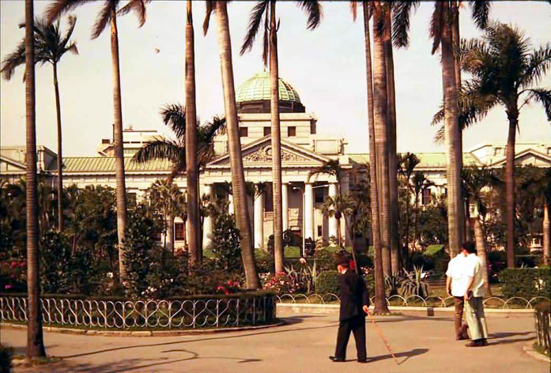
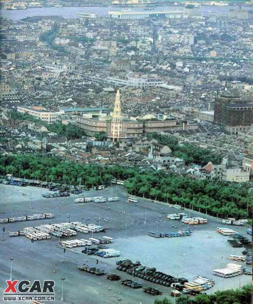
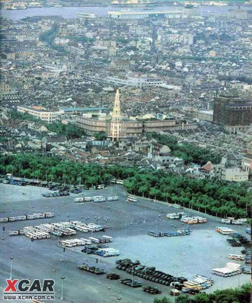
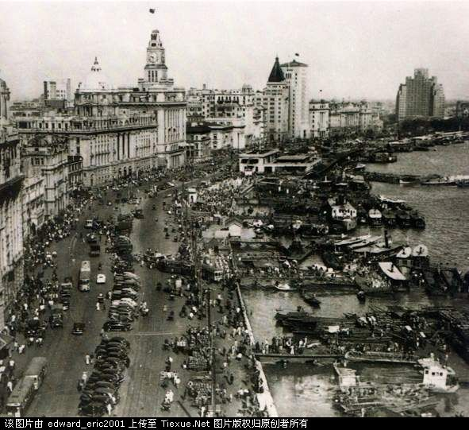
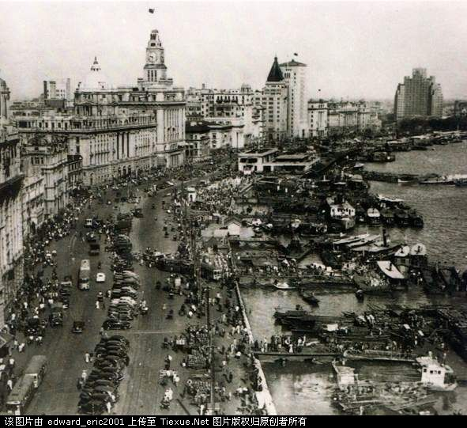

只看某人回复
X关注此帖
X对不起，您选择关注的帖子数量已到达上限，您可以对以关注的帖子进行取消操作，再进行新的帖子关注操作。
已关注的帖子
待处理的帖子
关注此帖
X请选择关注类型
您当前的功能设置
关注帖子功能设置
请选择接收信息的方式：
短信接收帖子关注信息每月最多为50条短信（全部免费），超出部分以站内消息形式通知。
请选择接收短信通知信息时间：24小时制
为了避免短信发送对您造成打扰，请设置您方便接收短信的时间，最多可设置三个时间，通知消息将在您指定的时间以短信形式发送给您。
『台湾』八一八我刚从来参加台湾游回来拍的照片,台北真的很落后(有图有真像)
1#作者：上海超越紐約 回复日期：2011-5-23 10:31:00
.
终于到了宝岛台湾

台北航空站真的很陈旧,跟北京首都机场,上海浦东机场,不是一个档次的

之前看到一则新闻说,连战公子连胜文说,外国人到台湾看到机场,会以为到了朝鲜平壤
要离开机场了开始市区观光了,台北航空站真的好小
机场出来的道路,台湾的确是开发中地区
终于到了宝岛台湾
台北航空站真的很陈旧,跟北京首都机场,上海浦东机场,不是一个档次的
之前看到一则新闻说,连战公子连胜文说,外国人到台湾看到机场,会以为到了朝鲜平壤
要离开机场了开始市区观光了,台北航空站真的好小
机场出来的道路,台湾的确是开发中地区
2#作者：liubin8299 回复日期：2011-5-23 10:33:00
直播
3#作者：悍血宝马 回复日期：2011-5-23 10:34:00
大事不好
台湾底裤要被脱光了
湾湾快来护主
台湾底裤要被脱光了
湾湾快来护主
4#作者：深爱宝岛 回复日期：2011-5-23 10:34:00
一切都是幻觉！
楼主你故意贴烂照来丑化台湾！
棒子拥有历史，阿三占领未来，现在一切尽在台湾掌控之中。
楼主你故意贴烂照来丑化台湾！
棒子拥有历史，阿三占领未来，现在一切尽在台湾掌控之中。
5#作者：hehiroki 回复日期：2011-5-23 10:37:00
机场附近空旷是必须的！！
最后一张图片是什么年代拍的
最后一张图片是什么年代拍的
6#作者：yanganpig 回复日期：2011-5-23 10:39:00
??????
真是懷古阿, 樓主做了一次台灣的時光之旅,
這些二三十年前的照片, 讓我們緬懷台灣的過去.....
不勝唏噓....
真是懷古阿, 樓主做了一次台灣的時光之旅,
這些二三十年前的照片, 讓我們緬懷台灣的過去.....
不勝唏噓....
7#作者：tzainan 回复日期：2011-5-23 10:39:00
彩色懷舊照片...
難得...
難得...
8#作者：台湾好民主呀 回复日期：2011-5-23 10:41:00
这是很久的照片了吧？
9#作者：注册个好名字很难 回复日期：2011-5-23 10:47:00
@深爱宝岛 2011-5-23 10:34:00
一切都是幻觉！
楼主你故意贴烂照来丑化台湾！
棒子拥有历史，阿三占领未来，现在一切尽在台湾掌控之中。
-----------------------------
你說得不錯，我亦深以為然，亞洲的民主燈塔，自由基地絕非浪得虛名。
中華復興還看寶島！
一切都是幻觉！
楼主你故意贴烂照来丑化台湾！
棒子拥有历史，阿三占领未来，现在一切尽在台湾掌控之中。
-----------------------------
你說得不錯，我亦深以為然，亞洲的民主燈塔，自由基地絕非浪得虛名。
中華復興還看寶島！
10#作者：tzainan 回复日期：2011-5-23 10:52:00
%這裡有松山機場樣貌的演變......
內容蠻豐富的....
http://oursogo.com/viewthread.php?tid=648816&extra=page%3D63
內容蠻豐富的....
http://oursogo.com/viewthread.php?tid=648816&extra=page%3D63
11#作者：wsahn 回复日期：2011-5-23 10:53:00
这张就像是上了色的当年国民党高官携太太们逃离大陆时情景的照片

12#作者：网络秦人 回复日期：2011-5-23 10:54:00
818在某些湾湾眼里中国落后的西部某机场
******************
*西安咸阳国际机场*
******************

******************
*西安咸阳国际机场*
******************
13#作者：上海超越紐約 回复日期：2011-5-23 11:09:00
.
经过台北南京东路,这就是台北小巨蛋
机场出来直行一段路之后,看到一个圆环内有蒋委员长的铜像

在圆环拐个弯直行一段路,看到工人正在佈置城楼
在张灯结綵的庆祝节日,挺热闹的
发现台军!!
经过台北南京东路,这就是台北小巨蛋
机场出来直行一段路之后,看到一个圆环内有蒋委员长的铜像
在圆环拐个弯直行一段路,看到工人正在佈置城楼
在张灯结綵的庆祝节日,挺热闹的
发现台军!!
14#作者：武汉流浪者2010 回复日期：2011-5-23 11:11:00
照片怎么那么旧，不相信。。。
15#作者：zdyzdy11 回复日期：2011-5-23 11:19:00
看车型 是七八十年代的吗
楼主在搞啥呢
楼主在搞啥呢
16#作者：上海超越紐約 回复日期：2011-5-23 11:22:00
.
往前步行一段路,终于看到观光点了
补拍一张正面的
先掌声欢迎台客游行队伍进场
看来大家还是别对台妹抱太大幻想好了.........好失望
这些台军肯定没看过建国60年大阅兵
往前步行一段路,终于看到观光点了
补拍一张正面的
先掌声欢迎台客游行队伍进场
看来大家还是别对台妹抱太大幻想好了.........好失望
这些台军肯定没看过建国60年大阅兵
17#作者：華人無限 回复日期：2011-5-23 11:31:00
憨陸仔，即然淪落到用30年前台灣的舊照片
來招搖撞騙，北京猿，真可愛啊
哈哈~
來招搖撞騙，北京猿，真可愛啊
哈哈~
18#作者：tzainan 回复日期：2011-5-23 11:32:00
11樓的別造謠...
該機型為"翠華號"是1961年7月11日由宋美齡剪綵啟用的...
CAT 是民航空運公司的簡稱...
該機型為"翠華號"是1961年7月11日由宋美齡剪綵啟用的...
CAT 是民航空運公司的簡稱...
19#作者：hklxxxx 回复日期：2011-5-23 11:32:00
贴张新照片，拿旧照片坑人，真不讲道德。
20#作者：上海超越紐約 回复日期：2011-5-23 11:36:00
.
旁边有个博物馆,可以让我了解一下台湾历史,门票很便宜的

从博物馆旁边走出来,一整条街有很多家书店
这是博物馆前面的路,看到一个工人正在铺路,应该是台北市长郝龙斌在台北推动的路平专桉

随便拍拍
全台湾最大的火车站,就是这个台北车站
旁边有个博物馆,可以让我了解一下台湾历史,门票很便宜的

从博物馆旁边走出来,一整条街有很多家书店
这是博物馆前面的路,看到一个工人正在铺路,应该是台北市长郝龙斌在台北推动的路平专桉
随便拍拍
全台湾最大的火车站,就是这个台北车站
21#作者：香客斯VS路飞 回复日期：2011-5-23 11:40:00
呵呵，LZ很用心。
以牙还牙，巴子还不是经常拿以前的照片酸中国人
以牙还牙，巴子还不是经常拿以前的照片酸中国人
22#作者：yykkyou 回复日期：2011-5-23 11:41:00
華人無限 回复日期：2011-5-23 11:31:00
憨陸仔，即然淪落到用30年前台灣的舊照片
來招搖撞騙，北京猿，真可愛啊
哈哈~
=======================================================
這些照片那時蔣光頭還在 至少40年了
想想40年前大陸在幹什麼? 正在焚書坑儒~~~~~! 而台灣正在欣欣向榮時~~~~~~~~~~!
不錯的對比 ~~~~~~~~~~~~~~~~~~~!
憨陸仔，即然淪落到用30年前台灣的舊照片
來招搖撞騙，北京猿，真可愛啊
哈哈~
=======================================================
這些照片那時蔣光頭還在 至少40年了
想想40年前大陸在幹什麼? 正在焚書坑儒~~~~~! 而台灣正在欣欣向榮時~~~~~~~~~~!
不錯的對比 ~~~~~~~~~~~~~~~~~~~!
23#作者：yykkyou 回复日期：2011-5-23 11:43:00
@tzainan @hklxxxx @華人無限 回复日期：2011-5-23 11:31:00
憨陸仔，即然淪落到用30年前台灣的舊照片
來招搖撞騙，北京猿，真可愛啊
哈哈~
=======================================================
這些照片那時蔣光頭還在 至少40年了
想想40年前大陸在幹什麼? 正在焚書坑儒~~~~~! 而台灣正在欣欣向榮時~~~~~~~~~~!
不錯的對比 ~~~~~~~~~~~~~~~~~~~!
憨陸仔，即然淪落到用30年前台灣的舊照片
來招搖撞騙，北京猿，真可愛啊
哈哈~
=======================================================
這些照片那時蔣光頭還在 至少40年了
想想40年前大陸在幹什麼? 正在焚書坑儒~~~~~! 而台灣正在欣欣向榮時~~~~~~~~~~!
不錯的對比 ~~~~~~~~~~~~~~~~~~~!
24#作者：网络秦人 回复日期：2011-5-23 11:48:00
楼主穿越时空台湾行，，，牛
25#作者：上海超越紐約 回复日期：2011-5-23 11:51:00
.
去附近的商场逛逛好了
一整排的商场

发现前方有间戏院,突然想顺便看部电影
这间戏院没有放映3D肉浦团,好失望阿
忽然有火车从旁边驶过
去附近的商场逛逛好了
一整排的商场
发现前方有间戏院,突然想顺便看部电影
这间戏院没有放映3D肉浦团,好失望阿
忽然有火车从旁边驶过
26#作者：lifeidea 回复日期：2011-5-23 11:52:00
這個帖子小弟喜歡... ^^
有一些懷舊的照片可以搜集.
有一些懷舊的照片可以搜集.
27#作者：图形王子 回复日期：2011-5-23 11:54:00
楼主可能是反讽某些台湾人用一些大陆以前的照片和落后地区的照片来丑化大陆的！！
28#作者：丶傑克道森 回复日期：2011-5-23 11:55:00
这张太像我们军训的食堂了 哈哈
29#作者：ballylin 回复日期：2011-5-23 12:00:00
樓主是台灣人嗎?感覺對照片的解說蠻清楚的
30#作者：AWeigogo 回复日期：2011-5-23 12:05:00
還不錯 懷舊台北城
31#作者：武汉流浪者2010 回复日期：2011-5-23 12:06:00
和某些台湾人有异曲同工之妙，拿二十年前图片酸，楼主可谓用心良苦啊，辛苦拉~~！
哈哈`~~~~~~~~~~~！！
哈哈`~~~~~~~~~~~！！
32#作者：质感超好 回复日期：2011-5-23 12:09:00
说实话，80年代的确是台湾最美好的时光
这些图片看上去比现在的台湾要好
这些图片看上去比现在的台湾要好
33#作者：問天敵 回复日期：2011-5-23 12:11:00
台灣30年前 pk 30年後的大陸
34#作者：AWeigogo 回复日期：2011-5-23 12:11:00
这是博物馆前面的路,看到一个工人正在铺路,应该是台北市长郝龙斌在台北推动的路平专桉
=======================================================================
四十年前 郝大兵應該還小
不過 這個路平專案很混蛋
路一直鋪 但永遠不平 活像乞丐的補釘衣服
不適沒效率 就是貪汙
35#作者：名字好听家族 回复日期：2011-5-23 12:15:00
互相黑什么黑、、就不能正儿八经沟通？
楼主你现在就像一只烧饼。、被两岸的人一人一口吃到嘴里然后再吐出来、
楼主你现在就像一只烧饼。、被两岸的人一人一口吃到嘴里然后再吐出来、
36#作者：ballylin 回复日期：2011-5-23 12:16:00
這絕對不只30年前,應該40年前左右,
37#作者：武汉流浪者2010 回复日期：2011-5-23 12:18:00
台湾曾经最辉煌的时刻，可惜时光无法倒流。。。。。
38#作者：ballylin 回复日期：2011-5-23 12:20:00
那個年代出國是管制得很嚴格,所以能出國的人很少,況且有錢能出國的人也不多
39#作者：上海超越紐約 回复日期：2011-5-23 12:21:00
.
附近还有很多间戏院,我今天就是要看到3D肉浦团
怎么会有非洲国家总统违反一个中国原则访问台湾,亚非拉应该都是中国的好兄弟才对
不管了~继续往北完成市区观光
被我拍到有位大叔违规穿越马路,弯弯素质好高阿
矮楼~矮楼~还是矮楼
附近还有很多间戏院,我今天就是要看到3D肉浦团
怎么会有非洲国家总统违反一个中国原则访问台湾,亚非拉应该都是中国的好兄弟才对
不管了~继续往北完成市区观光
被我拍到有位大叔违规穿越马路,弯弯素质好高阿
矮楼~矮楼~还是矮楼
40#作者：yykkyou 回复日期：2011-5-23 12:21:00
@上海超越紐約 回复日期：2011-5-23 11:51:00
.
去附近的商场逛逛好了
======================================
那叫中華商場 是40年前台北市最牛逼的一條街 可惜沒機會去逛 呵呵~~~~~~~~~~~~~!
.
去附近的商场逛逛好了
======================================
那叫中華商場 是40年前台北市最牛逼的一條街 可惜沒機會去逛 呵呵~~~~~~~~~~~~~!
41#作者：問天敵 回复日期：2011-5-23 12:22:00
作者：ballylin 回复日期：2011-5-23 12:16:00
這絕對不只30年前,應該40年前左右,
-----
40年前大陸還在爹親娘親不如瞎小的親,搞不好比非洲還慘
這絕對不只30年前,應該40年前左右,
-----
40年前大陸還在爹親娘親不如瞎小的親,搞不好比非洲還慘
42#作者：AWeigogo 回复日期：2011-5-23 12:23:00
台湾曾经最辉煌的时刻，可惜时光无法倒流。。。。。
==============================================================
沒有辦法 日治時期留下的基礎
被KMT消耗殆盡
43#作者：yykkyou 回复日期：2011-5-23 12:28:00
哇 這台北市40年前照片 還真像現在廣東的東莞寮布 大嶺山 這些鎮的國道 簡直一模一樣
44#作者：ballylin 回复日期：2011-5-23 12:31:00
@上海超越紐約 2011-5-23 12:21:00
.
附近还有很多间戏院,我今天就是要看到3D肉浦团
怎么会有非洲国家总统违反一个中国原则访问台湾,亚非拉应该都是中国的好兄弟才对
...........
-----------------------------
感覺照片不是同一年拍的,汪洋中的一條船我記得是民國67.68年上映的
.
附近还有很多间戏院,我今天就是要看到3D肉浦团
怎么会有非洲国家总统违反一个中国原则访问台湾,亚非拉应该都是中国的好兄弟才对
...........
-----------------------------
感覺照片不是同一年拍的,汪洋中的一條船我記得是民國67.68年上映的
45#作者：注册个好名字很难 回复日期：2011-5-23 12:33:00
@華人無限 2011-5-23 11:31:00
憨陸仔，即然淪落到用30年前台灣的舊照片
來招搖撞騙，北京猿，真可愛啊
哈哈~
-----------------------------
說這話的人真是IQ無下限，估計生活已經不能自理了。
憨陸仔，即然淪落到用30年前台灣的舊照片
來招搖撞騙，北京猿，真可愛啊
哈哈~
-----------------------------
說這話的人真是IQ無下限，估計生活已經不能自理了。
46#作者：yykkyou 回复日期：2011-5-23 12:34:00
@ballylin 感覺照片不是同一年拍的,汪洋中的一條船我記得是民國67.68年上映的
===================================================
剛才谷歌一下
台北市西門町電影海報
"汪洋中的一條船" 1977年秦漢主演
===================================================
剛才谷歌一下
台北市西門町電影海報
"汪洋中的一條船" 1977年秦漢主演
47#作者：上海超越紐約 回复日期：2011-5-23 12:39:00
.
台北的特点,高楼旁必有破楼衬
台北特点二,摩托车大军
台北某消防队
真的很像个县城
参加这种低价团,购物行程是免不了的,只好进去"台湾特产手工艺品店中国馆"逛逛
台北的特点,高楼旁必有破楼衬
台北特点二,摩托车大军
台北某消防队
真的很像个县城
参加这种低价团,购物行程是免不了的,只好进去"台湾特产手工艺品店中国馆"逛逛
48#作者：yykkyou 回复日期：2011-5-23 12:42:00
@ballylin 感覺照片不是同一年拍的,汪洋中的一條船我記得是民國67.68年上映的
===================================================
剛才谷歌一下
台北市西門町電影海報
"汪洋中的一條船" 1977年秦漢主演
蔣光頭是1974年葛屁的(翹辮子) 所以這些照片應該只差距5年左右~~~~~~~~~~~!
不過35年前的台北市還真是不錯~~~~~~~~~~~~~~!
===================================================
剛才谷歌一下
台北市西門町電影海報
"汪洋中的一條船" 1977年秦漢主演
蔣光頭是1974年葛屁的(翹辮子) 所以這些照片應該只差距5年左右~~~~~~~~~~~!
不過35年前的台北市還真是不錯~~~~~~~~~~~~~~!
49#作者：RinckyMao 回复日期：2011-5-23 12:47:00
楼主真搞笑，那这么老的照片出来糊弄我们，当我们都是傻子看不出来么？要想和台湾比，就拿些真正你拍、的现在的，OK？
50#作者：RinckyMao 回复日期：2011-5-23 12:49:00
无聊透顶了~白痴
51#作者：yykkyou 回复日期：2011-5-23 12:50:00
@上海超越紐約
還得真的謝謝樓主 不知從那裡翻出來的珍貴照片 看都沒看過的台北市~~~~~~~!
沒想到40年前的台北市感覺這麼好~~~~~~~~~!
還得真的謝謝樓主 不知從那裡翻出來的珍貴照片 看都沒看過的台北市~~~~~~~!
沒想到40年前的台北市感覺這麼好~~~~~~~~~!
52#作者：赚钱赚到我心慌 回复日期：2011-5-23 12:51:00
大陆和台湾面对老照片，一个是忆苦，一个是思甜。
53#作者：上海超越紐約 回复日期：2011-5-23 12:52:00
.
不知道我们团下榻的酒店是几星的
先在酒店附近拍几张
喝可乐可以增进体力?
摩托车真多
中午用餐的地方
不知道我们团下榻的酒店是几星的
先在酒店附近拍几张
喝可乐可以增进体力?
摩托车真多
中午用餐的地方
54#作者：RinckyMao 回复日期：2011-5-23 12:55:00
楼主你到底有意思么？你是几十年前去的台湾么？贴这么老的照片一点说服力也没有？你在贴贴咱们大陆几十年前的照片，好意思比么？
55#作者：togogogo 回复日期：2011-5-23 12:59:00
楼主很搞笑啊
56#作者：毒药一两 回复日期：2011-5-23 13:00:00
楼主不是台湾人的话，那么就是对台湾有研究的相关一些部门的人了啊，这么多老图片，就是台湾人一时半伙都拿不出来啊
57#作者：qq5505957 回复日期：2011-5-23 13:00:00
回复楼主，@上海超越紐約
到台版潜水已久,让我想登岛一探究竟,于是参加了台湾游
-----------------------------
謝謝樓主!!!!!
終於知道我老娘他們那個年代的辛酸史~~~~~~
到台版潜水已久,让我想登岛一探究竟,于是参加了台湾游
-----------------------------
謝謝樓主!!!!!
終於知道我老娘他們那個年代的辛酸史~~~~~~
58#作者：new_shop 回复日期：2011-5-23 13:04:00
確定是70s
俺很喜歡~~~樓主哪找的?多貼一些~~~俺要存檔!!
俺很喜歡~~~樓主哪找的?多貼一些~~~俺要存檔!!
59#作者：上海超越紐約 回复日期：2011-5-23 13:05:00
.
往花博圆山园区的路上
圆山园区周边,据说有个动物园

台妹的时尚,挺雷人的
淡水河上的饭店,真想上去看看
往花博圆山园区的路上
圆山园区周边,据说有个动物园
台妹的时尚,挺雷人的
淡水河上的饭店,真想上去看看
60#作者：lolo_谢 回复日期：2011-5-23 13:13:00
这些图片看上去比现在的台湾要好
————
呵呵，有同感。
61#作者：上海超越紐約 回复日期：2011-5-23 13:15:00
.
左边黄色的小屋子,叫做台北故事馆
这园山饭店估计是高端消费的
近一点再拍一张
正在搞建设

从高处往台北市区拍,真的没有高楼
左边黄色的小屋子,叫做台北故事馆
这园山饭店估计是高端消费的
近一点再拍一张
正在搞建设
从高处往台北市区拍,真的没有高楼
62#作者：省钱又省心 回复日期：2011-5-23 13:16:00
这么老的照片。楼主穿越了。。
63#作者：yanulo 回复日期：2011-5-23 13:18:00
楼主是台湾人，大家别被他钓到
64#作者：上海超越紐約 回复日期：2011-5-23 13:23:00
先发到这边,我吃个午饭先
65#作者：七千树 回复日期：2011-5-23 13:37:00
哈哈哈！
66#作者：台独长老不拉灯 回复日期：2011-5-23 13:39:00
什么时候的老照片了，虽然是老照片，可以看出台湾并没有变化多少。几乎还是老样子。比如圆山附近。
67#作者：社區一號 回复日期：2011-5-23 13:45:00
我要說刺耳的話!
台北早年發展時街道 環境 就非常乾淨! 決不是經濟發達 才管市容的
相較今天 內地? 有人說經濟沒很發達 是管不到環境的!
是嘛????? 今天 台灣人說 內地真的素質不好 你說有沒道理?
果然 還是兩邊人民 自覺管理 觀念有差!
台北早年發展時街道 環境 就非常乾淨! 決不是經濟發達 才管市容的
相較今天 內地? 有人說經濟沒很發達 是管不到環境的!
是嘛????? 今天 台灣人說 內地真的素質不好 你說有沒道理?
果然 還是兩邊人民 自覺管理 觀念有差!
68#作者：空旷的心 回复日期：2011-5-23 13:46:00
台北有很大变化，就是出现了连绵几十平方公里的铁皮屋～～
69#作者：scyang2002 回复日期：2011-5-23 13:48:00
我也很喜歡樓主的帖子.這些相片我就收下來了.
再次感謝你的分享..
再次感謝你的分享..
70#作者：空旷的心 回复日期：2011-5-23 13:49:00
1980年的台北 比現在的台北好太多了!!
至少没有遍地的铁皮屋
71#作者：空旷的心 回复日期：2011-5-23 13:52:00
即使台湾经济最“鼎盛”的80年代，台北放在中国也不过是一座小县城而已～～
72#作者：阴谋师 回复日期：2011-5-23 13:57:00
m
73#作者：上海超越紐約 回复日期：2011-5-23 14:13:00
八一八我台湾亲戚回来探亲时,给我看的台湾照片


74#作者：上海超越紐約 回复日期：2011-5-23 14:21:00
.
三峡火车站
台北新公园
黄包车伕
儿童乐园售票员
三峡火车站
台北新公园
黄包车伕
儿童乐园售票员
75#作者：chenhuiyan1 回复日期：2011-5-23 14:28:00
楼主时光倒流台湾旅游？
好厉害
好厉害
76#作者：上海超越紐約 回复日期：2011-5-23 14:28:00
.
淡水渡船头
关渡平原
圆山动物园的缅甸华侨-林旺
城中区台妹逛大街
台北衡阳路
淡水渡船头
关渡平原
圆山动物园的缅甸华侨-林旺
城中区台妹逛大街
台北衡阳路
77#作者：wmlksj 回复日期：2011-5-23 14:28:00
很有感觉的照片
78#作者：小白哈维 回复日期：2011-5-23 14:28:00
@深爱宝岛 2011-5-23 10:34:00
一切都是幻觉！
楼主你故意贴烂照来丑化台湾！
棒子拥有历史，阿三占领未来，现在一切尽在台湾掌控之中。
-----------------------------

一切都是幻觉！
楼主你故意贴烂照来丑化台湾！
棒子拥有历史，阿三占领未来，现在一切尽在台湾掌控之中。
-----------------------------
79#作者：2125270 回复日期：2011-5-23 14:36:00
老上海

80#作者：空旷的心 回复日期：2011-5-23 14:36:00
谁能有我早～
1895年，日军占领台湾的老照片。
81#作者：上海超越紐約 回复日期：2011-5-23 14:38:00
.
大世纪戏院
国泰戏院
远东戏院
台北西门 中国戏院午夜场
大世纪戏院
国泰戏院
远东戏院
台北西门 中国戏院午夜场
82#作者：2125270 回复日期：2011-5-23 14:41:00
老上海


83#作者：2125270 回复日期：2011-5-23 14:43:00
那时候的上海人
84#作者：2125270 回复日期：2011-5-23 14:46:00
老上海超越老台北 老上海超越老台北 老上海超越老台北 老上海超越老台北 老上海超越老台北 老上海超越老台北 老上海超越老台北 老上海超越老台北
85#作者：上海超越紐約 回复日期：2011-5-23 14:46:00
.
庆祝台湾光復
台北城楼

台北儿童乐园外牆
台北南海学园
庆祝台湾光復
台北城楼
台北儿童乐园外牆
台北南海学园
86#作者：沉醉不知归路go 回复日期：2011-5-23 14:48:00
楼主是搞考古的？
干嘛拿出文物鞭尸？
干嘛拿出文物鞭尸？
87#作者：2125270 回复日期：2011-5-23 14:50:00
故宫前的广场上出现收费停车
88#作者：yikesi69 回复日期：2011-5-23 14:52:00
这是什么时间的？
若当时还是很先进的
若当时还是很先进的
89#作者：小白哈维 回复日期：2011-5-23 14:52:00
我也感觉怎么台湾反而倒退了，还不如几十年前的建筑新。。。。
90#作者：上海超越紐約 回复日期：2011-5-23 14:53:00
.
一整排的砲
要庆祝神马
中国童子军庆祝大会
一整排的砲
要庆祝神马
中国童子军庆祝大会
91#作者：上海超越紐約 回复日期：2011-5-23 14:57:00
.
香港南洋日报贺
香港南洋日报贺
92#作者：2125270 回复日期：2011-5-23 15:03:00
台湾总统府真气派啊！！！！佩服
伪总统府
中南海大门（党中央、国务院办公地）
中南海（党中央、国务院办公地）
伪总统府
中南海大门（党中央、国务院办公地）
中南海（党中央、国务院办公地）
93#作者：2125270 回复日期：2011-5-23 15:09:00
沪西工人剧院
（那个年代的上海）

（那个年代的上海）
94#作者：2125270 回复日期：2011-5-23 15:11:00
上海少年宫（看到那个少先队队徽没有？）
95#作者：RinckyMao 回复日期：2011-5-23 15:16:00
读懂楼主的幽默真是不容易
96#作者：2125270 回复日期：2011-5-23 15:21:00
打压台巴子的心理底线！！！
97#作者：yykkyou 回复日期：2011-5-23 15:26:00
@RinckyMao 回复日期：2011-5-23 12:49:00
无聊透顶了~白痴
================================
美眉好憤哦 請問您老人家是那裡人?
无聊透顶了~白痴
================================
美眉好憤哦 請問您老人家是那裡人?
98#作者：2125270 回复日期：2011-5-23 15:29:00
解放前的上海城 解放前的上海城 解放前的上海城 解放前的上海城 解放前的上海城 解放前的上海城 解放前的上海城 解放前的上海城 解放前的上海城 解放前的上海城


99#作者：上海超越紐約 回复日期：2011-5-23 15:32:00
.
台湾惨遭老美空袭轰炸
后面那楼已半毁
台北天主教静修女中教堂
少先队阵容浩大
毛:你很快就会笑不出来了

台湾惨遭老美空袭轰炸
后面那楼已半毁
台北天主教静修女中教堂
少先队阵容浩大
毛:你很快就会笑不出来了
100#作者：194408 回复日期：2011-5-23 15:33:00
樓主真會玩無間